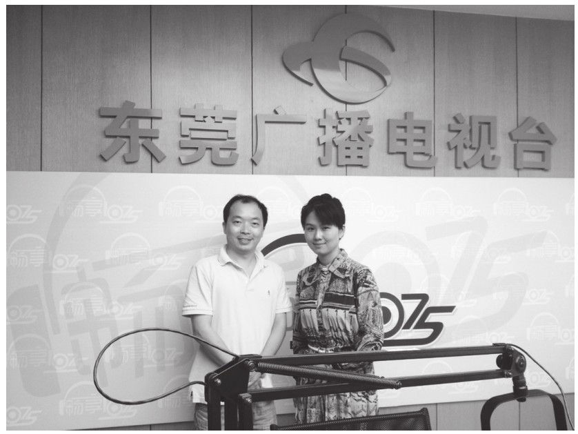

近来湖南卫视的一档亲子节目《爸爸去哪儿》受到大家的热捧，人们在茶余饭后谈论这些明星父亲在培育孩子方面得与失的同时，也给社会发出了一声振聋发聩的呐喊，那就是父亲在家庭教育中的角色以及承担。同时也给我们带来了巨大的思考，父亲在家庭教育中的定位应该是怎样的？亦或者说，现代家庭的父亲教育到底应该扮演一个怎样的角色？
在人的一生所接受的教育中，家庭教育是伴随一生的教育。家庭教育先于学校教育，并且在学校教育的整个阶段内，一般都自始至终伴随着家庭教育，在学生离开学校后，家庭教育仍在进行。因此，家庭教育在人的整个人生成长中，具有举足轻重、无可替代的作用。而在家庭教育中的主要教育实施者，一般情况下，就是父亲和母亲。
今天我们也借《爸爸去哪儿》的热播劲儿，谈谈父亲教育的几个问题。
一、从《爸爸去哪儿》说起
《爸爸去哪儿》展示了妈妈角色缺失下的亲子关系，之所以受到如此热捧，除了其中的明星效应外，其实也是触动了我们每一个人的神经，那就是我们客观存在的一个现实问题，爸爸在孩子的成长中扮演着怎样重要的角色。我们知道，3岁前是儿童建立心理安全期的重要阶段，孩子需要通过和母亲的亲昵互动来体验信赖和安全感；而3—6岁则是养成人际交往行为的阶段，孩子在这个年龄段的成长体验，爸爸都扮演更为重要的角色，孩子通过爸爸的行为观察世界，孩子通过爸爸的表现习得各种社会功能。可以说，爸爸是孩子观察世界的第一扇窗口。
然而客观的现实问题是，孩子在成长和受教育的过程中，父亲的教育角色正在慢慢淡化甚至是缺失。有调查发现，现实生活中71.8%的父亲都能“疼爱关心子女”，但是在家庭教育观念、态度和行为表现上却不尽如人意，存在较多的问题和遗憾。主动接触孩子、能同孩子一起玩耍的父亲占比不到20%，这个调研结果与我平常的观察相对契合。平常和孩子接触少的父亲，自然对孩子身心的发展，特别是心理发展的状况和特点缺乏了解。当父亲不能满足孩子正常的心理需求时，就很难建立起良好的父子关系。没有良好的父子关系，孩子就不能从父亲那里汲取到足够的成长力量，孩子健康人格的发展自然就受到了不同程度的影响。同时，由于社会分工的不同以及某些错误观念的影响，父亲在家庭教育的参与度上比母亲要低，孩子在成长的过程中，无法从父亲身上吸取到足够的养分，必然导致孩子的成长出现了不少的问题。美国哈佛大学曾经有一个对单亲家庭的研究表明，有90%以上的儿童问题与父性教育的缺失有关。从我国一些犯罪孩子的身上，也发现了与该调查报告相类似的问题。
二、我的教育观察
以前我们认为，由于女孩子的生理发育较男孩子要早，因此小学阶段女孩子普遍比男孩子要优秀一些，但是到了中学阶段，男孩子将奋起直追，成为学习成绩、综合能力等各个方面的领跑者。但是，我们现在却惊讶地看到，小学阶段，各方面比较优秀的是女孩子，小学升初中成绩特别优秀的是女孩子，初中阶段各个方面比较优秀的女孩子居多，在中考中成绩拔尖的大多是女孩子，到了高中阶段女孩子继续领跑，甚至在高考录取中，女孩子的成绩也普遍高于男孩子，以至于某些高校出现了女生宿舍爆满而男生宿舍空缺的现象。媒体还报道，一些硕士生导师、博士生导师在招生录取后都感叹，女孩子比男孩子的成绩要好。
整个社会都在大声疾呼拯救男孩儿。那么是什么原因造成了这样的局面呢？
我想除了我们早期的教育教学的评价机制中，诸如听话、守纪律、懂礼貌等更有利于女孩子获得好的评价之外，父亲在孩子成长教育的过程中的作用没有得到足够的彰显应该是更重要的原因。孩子从出生就是由妈妈哺育，然后是奶奶或者外婆、甚至是女保姆带大，女性在孩子0—6岁的整个成长过程中占据了绝对主要的地位。到了幼儿园、小学，老师又以女教师居多，父亲由于忙工作、忙生活见面时间较少，见了面又没有科学恰当的角色引领和亲子互动，以至于男孩子在成长过程中女性倾向比较严重。以我近段时间选拔学生会干部为例，走上台去落落大方、侃侃而谈的普遍是女孩子，相反地，走到台前扭捏作态、抓耳挠腮的男孩子大有人在。
在日常的教育教学工作中，与老师沟通的学生家长，以母亲居多，到学校开家长会的，差不多也是亲一色的娘子军。
这也彰显了在现代社会中许多家庭明确的分工，即男人负责挣钱养家，女人负责家务带娃。这本身无可厚非，也是中国的一种传统习俗，虽然现在我们伟大的女性们也承担起了不少挣钱养家的重任，但“家务带娃”的重担往往还是偏重落在了许多现代女性的肩上。但需要我们警觉的是，男人、父亲在教育子女的过程中，有没有起到应该有的责任和义务。
遗憾的是，我们不得不承认的一个现实就是，父亲教育的缺失正是一个严重的社会现象。
三、父性教育与家庭
北京师范大学的陈建翔博士在他的教育专著《孩子的爸爸去哪儿了？》一书中，首次提出了“父性教育”这一概念。“父性教育”与“父爱教育”“父职教育”相比，“父性教育”的说法更准确地表述了父亲在家庭教育中的独特作用。父性，是父亲这一角色的全部人格与特征的概括。所谓父性教育，就是由父亲来实施的，体现父亲人格或充满父亲角色特征的家庭教育。

作者在东莞广电做专题讲座
自古以来，我们的家庭都是“男主外，女主内”的传统格局。一位著名的人类学家曾经说过，从生物角度讲，父亲是必不可少的，但从社会角度看，父亲却被描绘成养儿育女的局外人，我们的文化与这种观点也亦步亦趋。女性在孩子养育和家庭教育中往往付出更多的时间和精力。很多家庭教育都是“母性”这“半边天”在支撑着，父性教育的参与度远远不够，甚至是严重缺失。
人类与动物界的一个很重要的区别，就在于拥有“父亲”这一重要角色。据日本京都大学河合雅雄教授的说法，在动物社会中并无人类这种意义上的父亲，人类为了要过群体生活，才组织了所谓的家庭生活，因而有了“父亲”这个角色。河合教授说，人与动物的最大差别之一，就是这个“父亲”的名位。只要是人，无论其民族是否开化，他们照样明显地有父亲和母亲的存在。母与子的关系，无论在任何动物间，都能一眼看出。然而像人类这样的父子关系，却必须在某种社会的组织或制度下——亦即在某种规则下建立的关系中才能存在。
所谓父亲，是家庭中的“社会代表人物”，是表现母子关系这个动物性关联所没有的“制度”和“规则”的人。那么，父亲在家庭教育上的存在意义，就更清晰和独特了。通俗地讲，父亲如果能在子女教育上多多用心，孩子就会在不知不觉中，感知到“父亲”所代表的“社会”或“制度”等人类团体的规则，进而认知世界、认知社会，快速成长为真正意义的“人”。
一个好父亲胜过一百个好老师。在家庭教育中，如果把母亲比喻为一片绿草地，给孩子提供温情、舒适感，让孩子在自己的绿草地上恣意狂欢、奔跑，那么，父亲就好比是一棵大树，给孩子提供力量、支持和依靠，给孩子树立一个标杆、榜样。性格形成的主要机制是模仿。家庭是孩子的第一所学校，也是永远的学校，父母亲是孩子终身的老师，子女成长的最初就是在家模仿父母亲。父性教育的缺失，将让孩子们无法从父亲身上学到男人的果敢、坚毅、担当，因此也就表现出焦虑、自尊心不强、自控力弱等情感障碍，表现为忧虑、多动、有依赖性，被专家称为“缺少父亲综合征”。古语有云，“养不教，父之过”，就是这个道理。
四、怎样做一个好父亲？
有人说，父母的教育格局和教育观念就是孩子成长的“天花板”。对于孩子们来说，他们之间的竞争，在他们父母的教育观念的差异中就已经开始了，或者说，这种差异已经基本决定了最后的输赢。观念决定命运，说的也是这个道理。
现代高强度的生活压力下，父亲显然要承担更多的家庭经济重任和孩子的养育责任。
作为一个好父亲，首先是要努力工作，这是最基本的要求。更重要的是，要有社会责任感和家庭责任感，这才是一个完整的父亲形象。研究发现，孩子智能发展的高低与和父亲接触的密切程度息息相关。心理学家麦克·闵尼指出，一天中，与父亲接触不少于2小时的孩子，比那些一周以内接触不到6小时的孩子，智商更高。更有趣的是，研究人员还发现，父亲对女孩子的影响力要大于对男孩子的影响力。对于小孩来说，游戏是比讲道理更为有效的教育方式。孩子的天性决定了他们要在玩耍中获得经验和情感，获得成功和满足。作为父亲，能进入孩子的想象空间，和孩子一起玩，一起乐，一起“疯”，能放下父亲的架子与“威严”，与孩子一起在游戏里陶醉，享受在游戏中的满足感和成功感，就能与孩子建立亲密和谐的亲子关系，就能发挥孩子活动的积极性和创造性。
在生活习惯上做好表率。榜样与模仿的巨大影响力，我在此不再赘述。从我们老师的角度来讲，一个优秀的学生背后一定是一个成功的家庭，而一个问题学生的背后可能是家庭教育存在问题的多个家长。俗话说“龙生龙、凤生凤、老鼠生儿会打洞”，描述的就是一个子女对父母无形中模仿的道理。俗语又说“有其父必有其子”说的也是一个父亲对孩子无形的影响。你要想自己的孩子成为一个什么样的人，那你首先得成为一个什么样的人，这是最浅显易懂的道理。因此，作为一个父亲，在家里能做到基本的不乱丢东西、不说脏话、爱干净讲卫生、尊重父母妻子、与邻为善、不抽烟酗酒、不玩电子游戏等等，你就是在教育孩子了。
做一个学习型的父亲。男人们，请你记住，你的工作可以跳槽，你的投资可以改变方向，但是父亲却是你的终身职业，而你进行岗前培训了吗？我国现代教育家陈鹤琴先生在他的《怎样做父母》一文中说：“父母，不是容易做的，一般人以为结了婚，生了孩子，就有做父母的资格了。其实不然。无论栽花、养蜂、养蚕，还是养羊、养马、养鸟、养鱼，都要先懂得专门的方法才可以养好。难道养小孩，不懂得方法，可以养得好吗？”他甚至说，许多年轻的父母对于养孩子的方法既无事先准备，又无事后研究，好像孩子的价值，不及一只猪、一只羊，这真是一件奇怪的事。所以，为人父母者，除了在生理、心理上要达标之外，还必须成为教育“行家”，掌握科学的育儿知识与方法。活到老、学到老其实放在教育孩子的历程中更为恰当，因为孩子在其成长过程中会面临不同的困难和烦恼，需要从父母这里得到的能量、支持、帮助是不一样的。
傅雷先生曾说：“孩子是站在父母的双肩上成长起来的，失去一方就没有了平衡。”在孩子的教育过程中，重要的是夫妻双方的配合，这就是另外一个更高的境界了，比单独地母亲教育或父亲教育的要求更高。给大家分享一个案例：一对夫妇带着2岁的女儿去旅游，小女孩看见路中间的狗很害怕，当看见父亲上去抚摸狗时，也上去摸了一下狗，父亲接着说：“狗怕人呢，狗和人是好朋友，会看家，不用怕。”接着又讲了狗的习性，小女孩的母亲则在回去的路上教她念了一首狗的儿歌，这对夫妇配合得多么默契呀！我相信，小女孩儿经过这一件事情之后，对狗的认识将是全面的、深刻的。
泰戈尔在诗里写道：“我们一次次地离开，是为了一次次地归来。”任何一种形式的回归总是带有温暖的色调，它意味着对最初意义的重新追寻，也意味着对更好未来的再度憧憬。都市男女工作的压力越来越大，生活的节奏也越来越快，但家庭永远是每个人心中最温暖的底色。男人们在工作之余回归家庭，回归家庭教育，是子女成长成才吸取养分的现实需要，更是我们每个人内心最真实的呼喊。